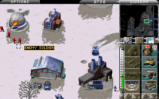

Command & Conquer - Alarmstufe Rot
Dieser Artikel wurde für die folgenden Ubuntu-Versionen getestet:
Dieser Artikel ist mit keiner aktuell unterstützten Ubuntu-Version getestet! Bitte diesen Artikel testen und das getestet-Tag entsprechend anpassen.
Zum Verständnis dieses Artikels sind folgende Seiten hilfreich:
Command & Conquer: Alarmstufe Rot ist der zweite Teil der C&C-Serie, die sehr für die Bekanntheit des Spielegenre Echtzeitstrategie beigetragen hat. Das Spiel behandelt eine alternative Zeitlinie ohne Drittes Reich bei der die Sowjetunion in Europa einmarschiert und das restliche Europa (die Alliierten) sich gegen Stalin verbündet. Mittlerweile wurde Alarmstufe Rot vom Rechteinhaber als Freeware veröffentlicht. Das Spiel läuft sowohl unter DOS als auch Windows 95. Da es einige nervige Fehler bei der Nutzung von Wine (wie das plötzliche Verschwinden des Mauszeigers) gibt, wird hier die Emulation mit DOSBox gewählt. Alternativ kann man auch die Open Source Reimplementation OpenRA verwenden.
Vorbereitung¶

Zunächst sollte man sich das Spiel herunterladen und das .rar-Archiv entpacken.[1] Die CDs unterscheiden sich nur in den Kampagnen-Zwischensequenzen (Alliierte oder Sowjets). Zudem empfiehlt es sich einen Ordner im Dateisystem anzulegen in den das Spiel installiert werden soll. Um /opt/redalert anzulegen benötigt man Root-Rechte.[2] Anschließend sollte man auch dafür sorgen Lese- und Schreibzugriff auf das Verzeichnis als normaler Benutzer zu haben.[3] Bspw. in einem Terminal durch folgende Eingabe:
sudo chmod o=rw /opt/redalert/
Wichtig ist die .iso-Datei, die auf einen gut zugänglichen Ort, z.B. /opt/redalert/iso, platziert werden sollte. Dann sollte DOSBox installiert und eingerichtet werden.[4]
Installation¶
Als erstes wird DOSBox gestartet.[5] Man gibt nun folgende Befehle in die DOSBox-Konsole ein:
MOUNT C /opt/redalert
Das gewünschte Installationsverzeichnis /opt/redalert wird als virtuelles Laufwerk C:\ eingebunden.
IMGMOUNT D /opt/redalert/iso/CD1_ALLIED_DISC.ISO -t iso
Das CD-Image (hier CD 1 mit den Videos der Alliierten) wird als virtuelles Laufwerk D:\ eingebunden. Das spart sowohl einen CD-Rohling, als auch noch ein weiteres Programm zum Einhängen des CD-Images im echten Dateisystem.
D:
Man wechselt von Laufwerk Z:\ auf das virtuelle CD-ROM-Laufwerk D:\.
core=normal
Das Installationprogramm hängt sich mit der Einstellung core=dynamic auf, also wird diese zunächst auf normal umgestellt.
setup
Nach Start der Installation folgt man den Anweisungen des Installationsprogramms und installiert das Programm auf einen beliebigen Pfad in Laufwerk C:\ z.B. C:\Westwood\RedAlert.
copy D:\Patch\*.* C:
Anschließend wird der Patch von der virtuellen CD kopiert.
core=dynamic
cycles=max
Damit der Patch nicht ewig braucht, werden die Einstellungen wieder ein bisschen optimiert. Die simulierten CPU-Zyklen werden nicht heruntergetaktet und der Kern reagiert dynamisch.
C:
patch
Man wechselt wieder auf Laufwerk C:\ und startet das Patch-Programm.
core=auto
cycles=auto
Die Einstellungen zur CPU-Reglementierung werden vor dem Spielstart wieder auf auto gesetzt.
Spielstart¶
Hinweis:
Das Einbinden des CD-Images und des Spielepfads lässt sich durch Anpassen des [autoexec]-Abschnitt der der DOSBox-Konfigurationsdatei automatisieren.[4]
DOSBox wird gestartet.[5]
IMGMOUNT D /opt/redalert/iso/CD1_ALLIED_DISC.ISO -t iso
Das CD-Image wird als Laufwerk D:\ eingebunden.
MOUNT C /opt/redalert
Der Spielepfad als Laufwerk C:\ eingebunden.
C:
Man wechselt zu Laufwerk C:\.
cd \Westwood\RedAlert
Man wechselt in den Spiele-Ordner.
RA
RA.exe startet das Spiel.
Informationen¶
| Command & Conquer: Alarmstufe Rot | |
| Originaltitel: | Command & Conquer: Red Alert |
| Genre: | Echtzeitstrategie |
| Sprache: |  |
| Veröffentlichung: | 1996 |
| Publisher: | Virgin Interactive |
| Systemvoraussetzungen | |
| - Betriebssystem | DOS, Windows 95 |
| - Steuerung | Maus und Tastatur |
| - Prozessor | 75 MHz |
| - Arbeitsspeicher | 8 MB RAM |
| - Festplattenspeicher | 40 MB |
| - Grafikkarte | 2-MB-Grafikkarte |
| - Internetverbindung | 56k Modem |
| Medien: | CD-Image / CD-ROM |
| Läuft mit: | DOSBox |
Weblinks¶

Downloads¶
Electronic Arts: Alliierte-CD Download
 , Soviet-CD Download
, Soviet-CD Download gameupdates.org legal torrent CnC: RA
(benötigt einen BitTorrent Client)
- Erstellt mit Inyoka
-
 2004 – 2017 ubuntuusers.de • Einige Rechte vorbehalten
2004 – 2017 ubuntuusers.de • Einige Rechte vorbehalten
Lizenz • Kontakt • Datenschutz • Impressum • Serverstatus -
Serverhousing gespendet von